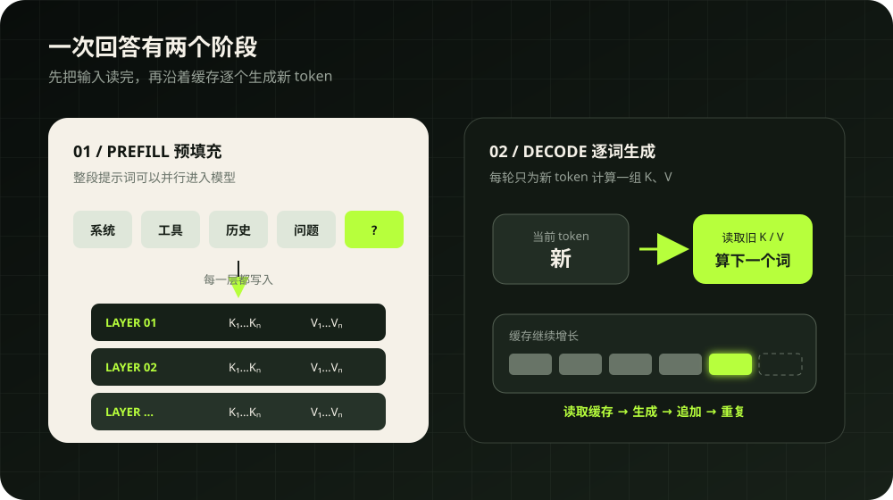
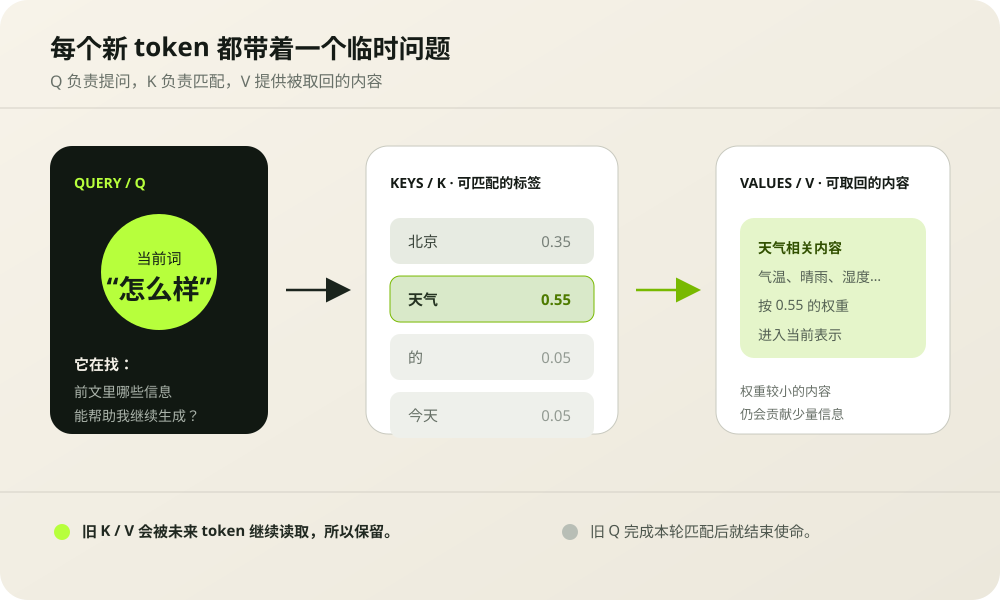
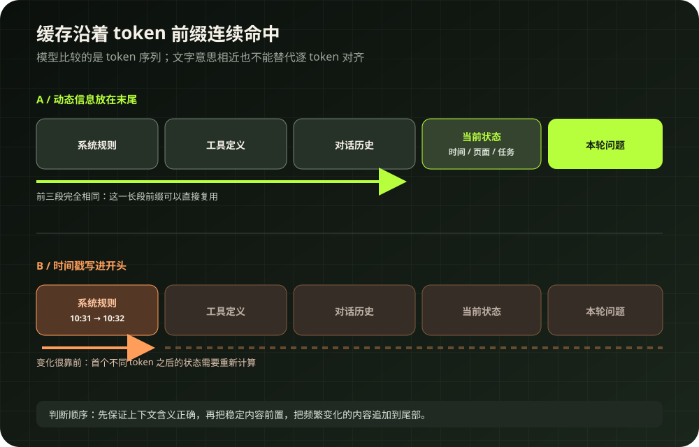
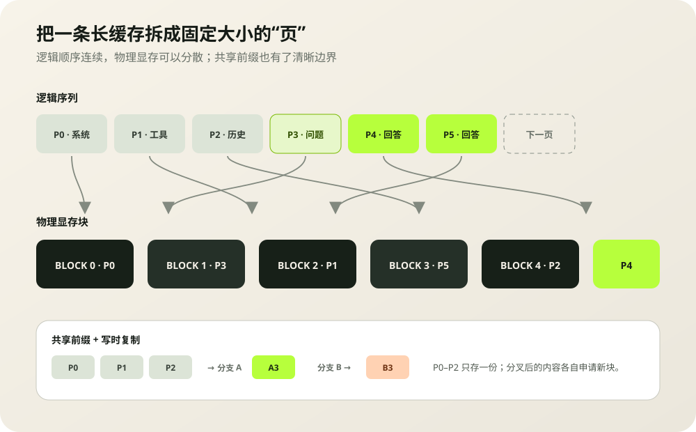

我是在读李博杰的《深入理解 AI Agent》第二章时，第一次把 Agent 的消息列表和模型底层缓存连在一起。API 本身没有一段会自动延续的“对话记忆”。Agent 每轮都会重新组织系统规则、工具定义、历史消息和当前问题，然后把它们送给模型。消息会重复发送，已经算出的前缀却有机会被复用。
这个区别很重要。它解释了系统提示词里一处靠前的动态时间戳为什么会拖慢首字返回，也解释了长对话为何会持续吃显存，还能指导工具列表、状态信息和压缩机制该放在上下文的哪个位置。
KV Cache 是模型读过前文后，在每一层留下的一组数值记录。生成下一个 token 时，模型读取这些记录，给新增 token 补上一组 K 和 V，然后继续向后生成。

01 / TWO PHASES模型先读完输入，再逐个写出答案
假设输入是“我喜欢吃”，模型准备续写“苹果”。它先处理输入里的全部 token。这个阶段通常叫 prefill，中文常译作预填充。GPU 可以同时处理许多输入位置，并在模型的每一层算出对应的 Key 和 Value，随后把它们保存下来。
从第一个输出 token 开始，过程进入 decode，也就是逐词生成。后一个 token 依赖前一个 token，所以这些步骤有明确先后顺序。每一步只新增一个 token 的计算，同时要读取此前所有可见 token 的缓存。
大批输入 token 可以并行计算，长提示词会带来明显的首字等待时间。
每轮新增的数据很少，却要反复读取越来越长的历史 K/V，常受到显存带宽影响。
因此，“模型已经读过”包含两层含义。对同一次生成来说，前文 K/V 留在当前序列的缓存里；对下一次 API 请求来说，还需要推理服务保留并识别相同前缀，才有机会跳过重复的预填充。
02 / Q · K · V为什么长期保存 K 和 V，没有保存旧 Q
注意力计算里，每个 token 会产生 Query、Key 和 Value 三类向量。可以先把它们理解成一次资料检索：
这个位置此刻想从前文找什么。它会与每个可见位置的 K 做匹配。
这个位置适合在什么情况下被关注。匹配分数决定读取权重。
匹配完成后真正进入加权汇总的信息。它会影响当前 token 的新表示。

新 token 到来时，它会生成新的 Q，用这个 Q 查询从第一个 token 到当前位置的全部 K，再按权重汇总对应的 V。下一步继续生成时，需要另一个新的 Q，历史 K 和 V 还会再次被读取。
旧 Q 也能确定下来，只是它已经完成了当时那次查询。未来 token 不会拿旧 Q 重新提问，保存它不会减少下一步必须做的计算。历史 K/V 有持续的消费者，旧 Q 没有，这就是 KV Cache 名字里只有 K 和 V 的原因。
03 / THE BILL省下重复计算，也接手一笔显存账单
没有缓存的朴素实现，会在每个生成步骤重新处理整段序列。写到第 1001 个 token 时，前 1000 个位置又走一遍模型；写第 1002 个时，它们还要再走一次。KV Cache 留住旧位置各层的 K/V，下一步只需要为新增 token 计算一组新的 Q、K、V。
缓存没有让注意力读取历史的工作消失。当前 Q 仍要和全部可见 K 比较，再读取对应 V。对单个解码步骤，历史越长，需要扫描的 K/V 越多；对一段完整输出，还要把每一步累加起来。长上下文在开启缓存后依然可能变慢。
忽略块对齐和管理元数据时，单个请求可以用下面的式子估算：
这也说明了为什么 MQA 和 GQA 会影响推理显存。传统多头注意力里，查询头和 KV 头数量常常相同；MQA 让多个查询头共用一组 K/V，GQA 则分组共享。公式里的“KV 头数”下降，缓存随之缩小。模型结构已经确定时，还可以通过缓存量化、滑动窗口或把部分缓存移到 CPU 来换取空间，每种方案都会引入速度、质量或传输上的新代价。
04 / TWO LEVELSKV Cache 与 Prompt Cache 处在不同边界
这两个名字经常混在一起。普通 KV Cache 关注一条活跃序列怎样继续生成；Prefix Cache 或 Prompt Cache 关注多次请求怎样复用相同前缀。后者通常保存或重新挂接前一次预填充产生的 KV 块。
| 机制 | 复用范围 | 主要收益 | 仍要做的事 |
|---|---|---|---|
| KV Cache | 同一条正在生成的序列 | 避免每一步重算旧位置 | 新 token 继续读取历史 K/V |
| Prefix / Prompt Cache | 多个拥有相同 token 前缀的请求 | 跳过命中部分的重复预填充 | 未命中的输入与后续输出照常计算 |
| Agent 消息历史 | 应用保存的结构化消息 | 让下一轮请求拥有足够语境 | 框架仍需构造并发送请求 |
| 长期记忆 / RAG | 数据库、文件或检索系统 | 跨任务保存和找回可读信息 | 检索结果需要重新进入模型上下文 |

举个 Agent 里的例子。系统规则有 3000 token，工具定义有 5000 token，历史对话有 2000 token。本轮只多了一条“当前页面是设置页”。如果前面的 10000 token 保持完全一致，新状态追加在末尾，推理服务可能直接复用这一长段前缀。如果系统规则开头每秒写入一次当前时间，差异会很早出现，后面的大部分缓存都失去命中机会。
缓存识别的是 token 序列。两段文字含义相近，token 不同，也无法当作同一个前缀。工具定义的顺序随机变化、JSON 序列化时空格不稳定、聊天模板更换，都可能改变最终 token。不同服务商还会设置最小前缀长度、块大小、保留时间、路由和租户隔离规则，应用需要查看自己所用平台的实时文档。
05 / SERVING缓存很大，还要解决它怎样住进显存
线上服务同时处理许多长度不同的请求。若每个请求都按最大输出长度预留一整段连续显存，短请求会留下大片空位，长度变化也会产生碎片。KV Cache 已经省下计算，低效的内存布局又可能把可并发的请求数压下来。
PagedAttention 借用了操作系统分页的思路：把一条序列的 KV 拆成固定大小的块，用块表维护逻辑顺序，物理块可以散落在显存的不同位置。空间按需分配，请求结束后也能按块回收。多个采样分支拥有同一段提示词时，还可以指向相同的前缀块；分叉后再给各自的新 token 分配新块。

PagedAttention 和连续批处理经常一起出现，两者各自处理一类问题。分页回答“缓存块放在哪里”；连续批处理回答“这一轮让哪些请求一起运行”。某条短请求生成完毕后，调度器可以立刻让等待中的新请求进入下一轮，释放出来的 KV 块也能重新分配。
按块分配、减少预留与碎片、支持前缀共享和写时复制。
每个生成步更新批内请求，让完成的序列及时离场，让等待请求及时加入。
06 / LIMITS四个容易混淆的边界
K/V 是每层的数值张量，和模型结构、位置及当前前缀绑定。它很难像一段 Markdown 那样查看、修改和长期归档。
它降低重复计算。模型能看到多长仍受架构、位置编码、服务配置和可用内存限制。
Prompt Cache 主要跳过重复预填充。新答案仍要逐 token 生成，每步仍会读取历史 K/V。
滑动窗口会丢弃较远位置，量化会降低精度，CPU 卸载会增加传输。它们都应通过真实负载测试。
缓存淘汰也值得单独关注。服务端显存有限，旧块可能按最近最少使用等策略回收；同一个请求稍后再来，前缀相同也不保证仍在缓存里。多实例部署还会遇到路由问题：新请求到达另一台没有对应 KV 的机器，命中自然消失。应用侧应该观察缓存 token 数、首 token 延迟和吞吐，少依赖“我觉得它应该命中”。
07 / AGENT LAYOUT把缓存规律变成上下文布局
Agent 的上下文通常由系统规则、工具定义、项目说明、历史消息、工具结果、当前状态和本轮问题组成。把这些材料按照变化频率排列，可以同时改善可读性和前缀复用：
布局仍要先服务任务语义。如果一条实时风险提示必须处在高优先级位置，就应放在能被模型正确执行的位置。缓存收益属于优化指标，不能覆盖安全和正确性。
- 记录最终 token 序列的稳定性，避免工具顺序、空格和序列化格式随机变化。
- 把时间戳、页面状态、用户临时信息追加到稳定前缀之后。
- 上下文接近预算时成批压缩旧工具结果，减少每轮改写中段造成的反复失效。
- 分别测量首 token 延迟和后续 token 速度，确认瓶颈位于预填充还是逐词生成。
- 监控缓存命中 token、淘汰量、显存占用和并发数，用数据确认布局改动的收益。
- 处理敏感前缀时开启租户隔离或 cache salt，避免跨用户共享带来的侧信道风险。
08 / RESEARCH FRONTIER“前缀一改，后面重算”会一直成立吗
当前生产引擎通常把精确前缀匹配当作安全规则：从首个不同 token 开始，后续缓存重新计算。2026 年的一篇预印本提出了更激进的观察：模型在预填充时会把某个字段造成的结论传播到后续位置，KV 状态像一页页带结论的笔记。只替换字段自身的 K/V，模型仍可能沿用旧结论，因为后面的“笔记”已经写好了。
可编辑、可组合的 KV “笔记”
论文探索了两条路径：在末尾追加醒目的更正，让显式推理把新事实传播到结论；以及对位置编码做重定位，把预先计算的缓存片段接到新上下文中。
作者报告的结果覆盖多种模型和缓存形式，也给出了在线 vLLM 实验。编辑依赖显式思考链等条件，工程实现仍处在研究阶段。今天设计生产系统时，精确前缀匹配仍是稳妥默认值。
这个方向让我重新理解 KV Cache。它携带的内容比“每个 token 的独立标签”更丰富，层层传播后的状态包含了模型对前文的加工结果。也正因如此，随意拼接或局部替换缓存很危险：张量形状对上了，语义未必跟着对上。未来的缓存编辑如果成熟，需要连同位置、注意力依赖和结论传播一起处理。
09 / TAKEAWAY从“缓存加速”走到“缓存约束架构”
KV Cache 的基本动作很朴素：旧 token 的 K/V 留下来，新 token 只补自己的一份。沿着这条线继续推，就会看到完整的系统问题：缓存随上下文和并发增长，显存需要分页管理，请求需要连续调度，跨请求复用要求前缀稳定，Agent 的动态状态最好向尾部追加。
我从这部分得到的最大收获，是把上下文从一串“写给模型看的文字”改看成一段有计算成本、有复用边界、有生命周期的数据结构。以后设计 Agent，我会同时问三个问题：模型现在需要看到什么，哪些 token 能长期稳定，任何改动会让多少缓存重新计算。
参考资料
- 李博杰：《深入理解 AI Agent》第二章 · KV Cache 友好的上下文设计本文的阅读起点；用于连接 API 消息结构、稳定前缀和 Agent 上下文布局。
- Hugging Face Transformers：Caching注意力公式、逐层缓存、因果遮罩与缓存张量形状。
- Hugging Face Transformers：Cache strategies动态、静态、滑动窗口、量化与 CPU 卸载的工程取舍。
- Ainslie et al.：GQA: Training Generalized Multi-Query Transformer Models from Multi-Head CheckpointsGQA 的模型结构与推理效率背景。
- Kwon et al.：Efficient Memory Management for Large Language Model Serving with PagedAttentionPagedAttention、块式显存管理、共享与写时复制。
- vLLM：Automatic Prefix Caching跨请求前缀复用的适用负载与 decode 阶段边界。
- Bojie Li：Models Take Notes at Prefill: KV Cache Can Be Editable and Composable2026 年预印本；缓存编辑与组合的研究前沿。